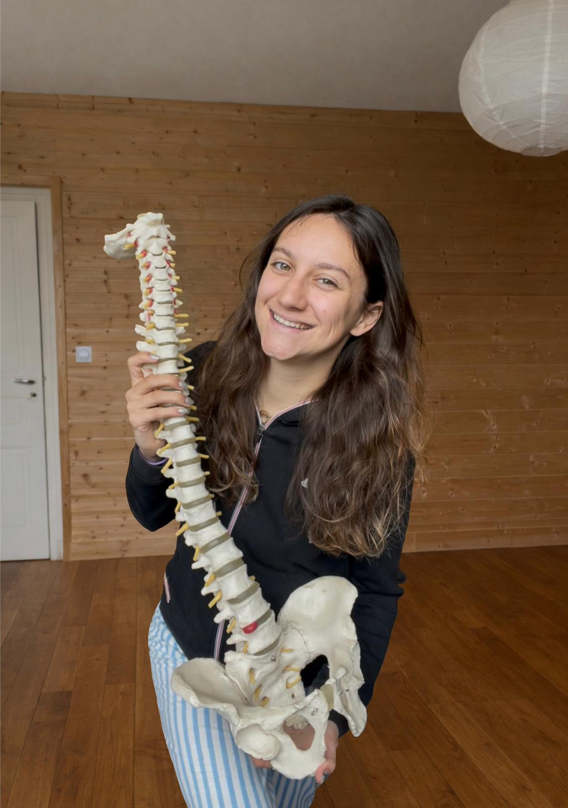

Déroulement d’une séance
Une prise en charge structurée et adaptée à votre situation.
-
Anamnèse
Nous commençons toujours la consultation par un temps d’échange pour apprendre à mieux vous connaître : habitudes de vie, antécédents médicaux et des questions ciblées pour comprendre vos douleurs, vos objectifs et vos attentes. Ici, nous ne traitons pas des pathologies, mais bien des personnes uniques en prenant en compte leur globalité.
- Motif de consultation, localisation et évolution des symptômes
- Facteurs aggravants/soulageants, sommeil, stress, activités
- Historique médical, traitements en cours, imageries à amener avec vous
-
Examen clinique
Nous poursuivons la consultation par des tests et palpations afin d’identifier précisément l’origine du problème, et de vérifier les structures impliquées (articulations, muscles, mobilité, amplitude).
- Tests fonctionnels, musculaires, amplitudes de mouvement
- Palpation ciblée et recherche de zones de tension
- Explication claire des résultats et du plan de prise en charge
-
Traitement
La thérapie manuelle est adaptée à vos besoins au moment de la consultation. Elle peut se composer de différentes techniques, telles que :
- Manipulations et mobilisations articulaires (HVLA, Gonstead)
- Travail musculaire (détente, relâchement, renforcement)
- Blocking (S.O.T)
- Neuromobilisation
- Stimulation des réflexes cutanés (Niromathé)
- Conseils et exercices personnalisés
Chaque prise en charge est individualisée afin de répondre au mieux à votre situation et à vos objectifs.
Il est important de noter qu’avant toute manipulation, je recueille toujours votre consentement éclairé.
La Chiropraxie
La chiropraxie est une thérapie manuelle reposant sur une idée essentielle : le corps a une capacité naturelle à s’équilibrer et se guérir lui-même.
Pour cela, le système nerveux doit pouvoir transmettre les informations librement entre le cerveau et le reste du corps.
Lorsque vous subissez un stress physique ou émotionnel, certaines articulations, notamment au niveau de la colonne vertébrale, se figent et perdent en mobilité, ce qui peut perturber cet équilibre.
Grâce à des ajustements précis et adaptés, le chiropracteur aide à redonner du mouvement là où cela compte pour soutenir le bon fonctionnement du corps.
La chiropraxie, c’est accompagner le corps pour qu’il puisse exprimer pleinement son potentiel.
Votre chiropracteure

Votre chiropracteure
Carol-Anne, diplômée de l’Institut Franco-Européen de Chiropraxie (IFEC), vous reçoit à Bujaleuf dans une approche fondée sur l’écoute, la justesse du geste et le respect du rythme de chacun.
Chaque consultation commence par un temps d’échange et d’observation, pour comprendre votre corps, vos besoins et construire une prise en charge sur mesure, dans un cadre serein et rassurant.
Mon intention est de vous aider à retrouver plus de mobilité, plus de confort et un équilibre durable.
Mes valeurs
Écoute, bienveillance, respect et confiance guident chacune de mes prises en charge, avec la volonté de vous accompagner en toute sérénité.